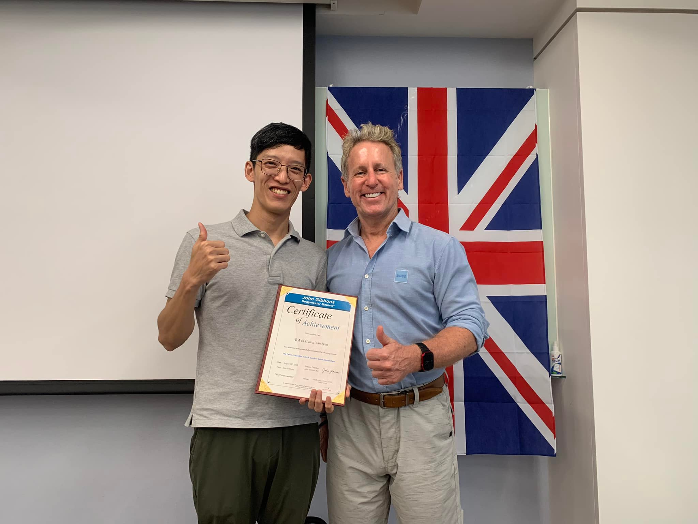
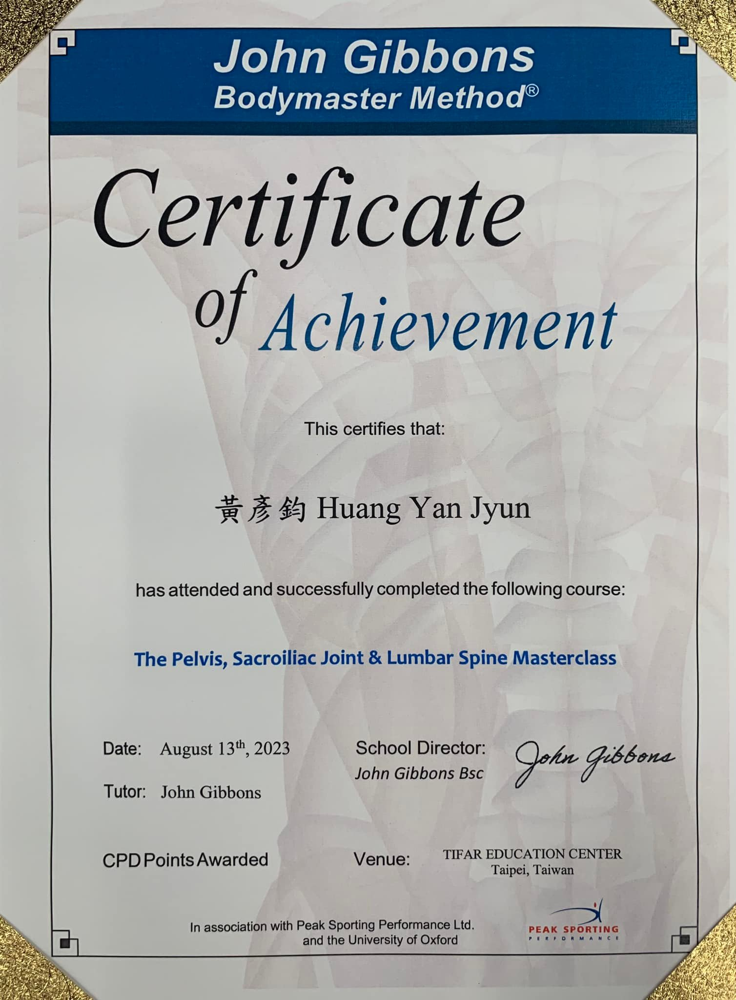

總算完成了3天的骨盆薦椎腰椎課程，John Gibbons真的厲害，評估的部分非…
總算完成了3天的骨盆薦椎腰椎課程，John Gibbons真的厲害，評估的部分非常的仔細，也是整個課程學到最多的部分，實在太開心能上這個課了！
整整五天的課程，真的是充實而且愉快😁
MET是個診間裡很好操作又可以很快見效的徒手方式，非常推薦有興趣的同道學習！


中醫徒手・內針傷整合・精準全人醫療
總算完成了3天的骨盆薦椎腰椎課程，John Gibbons真的厲害，評估的部分非常的仔細，也是整個課程學到最多的部分，實在太開心能上這個課了！
整整五天的課程，真的是充實而且愉快😁
MET是個診間裡很好操作又可以很快見效的徒手方式，非常推薦有興趣的同道學習！


有類似的困擾想諮詢？